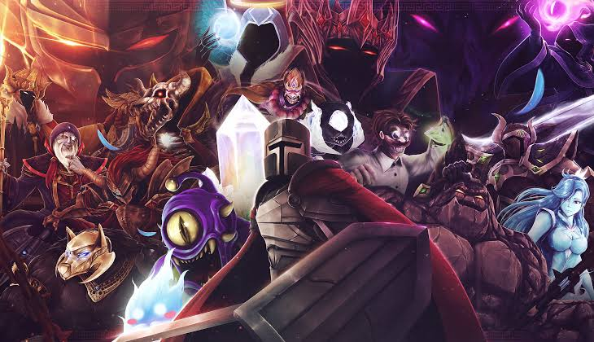
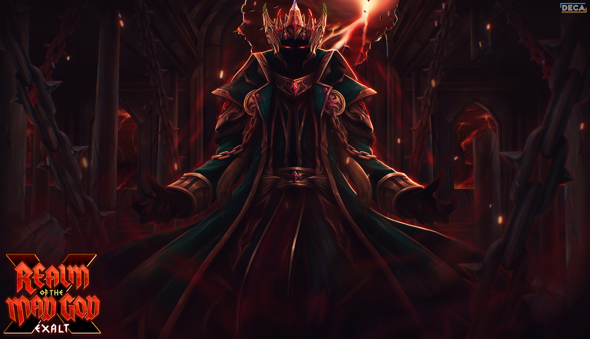

Esquivez des pluies de projectiles dans des combats nerveux en vue du dessus. Chaque ennemi a ses propres motifs d'attaque à apprendre.
Au centre du monde se dresse l'Arbre-Mère, dont les racines plongent dans des royaumes oubliés. Une corruption ronge ses branches, et ses fruits donnent naissance à des créatures hostiles. Vous êtes la dernière graine capable de la purger.
SkillTree est un jeu d'action en vue du dessus, en pixel art, développé par VoltJV. Esquivez des pluies de projectiles, affrontez des boss redoutables et descendez toujours plus profond dans les racines de l'Arbre.
Ici, la mort n'est pas une fin. Chaque expédition nourrit votre arbre de compétences : ce que vous perdez dans les profondeurs, vous le regagnez en puissance pour la prochaine descente.
Plantez votre graine. L'Arbre vous attend.
Depuis l'aube des temps, l'Arbre-Mère relie tous les royaumes. Ses branches portent la
lumière, ses racines puisent la sagesse des mondes enfouis. Chaque créature qui vit sous son feuillage lui doit
son existence.
Les anciens gardiens appelaient ses ramifications « l'Arbre des Savoirs » : chaque branche renfermait une
technique, chaque feuille un pouvoir, transmis à ceux qui s'en montraient dignes.
Un jour, quelque chose s'est réveillé tout au fond des racines. Une pourriture noire
remonte lentement la sève, dévorant les royaumes un à un. Les fruits de l'Arbre tombent désormais gâtés, et
chacun libère une créature corrompue.
Les gardiens sont descendus affronter le mal. Aucun n'est revenu.
Dans un ultime effort, l'Arbre a produit une graine pure, protégée de la corruption.
Cette graine, c'est vous.
Fragile au départ, vous grandissez à chaque descente. Chaque fois que vous tombez, l'Arbre recueille votre
essence et vous fait renaître, un peu plus fort. Votre mission : atteindre le cœur des racines et détruire la
source de la Pourriture.

Esquivez des pluies de projectiles dans des combats nerveux en vue du dessus. Chaque ennemi a ses propres motifs d'attaque à apprendre.

Faites grandir votre arbre de compétences entre chaque expédition et construisez le style de jeu qui vous ressemble.
Affrontez les Gardiens corrompus, des boss aux phases multiples qui mettront vos réflexes à rude épreuve.

Explorez des donjons et récupérez du butin rare. Mais attention : tombez au combat et votre équipement reste dans les profondeurs.
| Branche | Style | Particularité |
|---|---|---|
| Branche de l'Épine | Corps à corps | Attaques rapides à courte portée, gros dégâts |
| Branche de la Sève | Magie | Projectiles qui traversent les ennemis, coûtent de la mana |
| Branche du Vent | Distance | Tirs à longue portée et vitesse de déplacement accrue |
| Branche de l'Écorce | Défense | Boucliers, régénération et réduction des dégâts |
Au cœur du jeu se trouve votre arbre de compétences. Il ne se remplit pas en gagnant des niveaux, mais en récoltant la sève des ennemis vaincus. Investissez-la dans l'une des quatre branches, ou mélangez-les pour créer des combinaisons uniques : un mage qui se protège d'écorce, un archer qui frappe au corps à corps.
La mort est un élément central de l'aventure. Lorsque vous tombez, vous perdez votre équipement et votre progression dans le donjon, mais votre arbre conserve une partie de la sève récoltée. C'est le principe de la Renaissance : chaque échec vous rend plus fort pour la tentative suivante.
Votre équipement, lui, se gagne dans les profondeurs. Armes, armures et anneaux tombent des ennemis et des coffres, avec des raretés croissantes. Les plus précieux peuvent être greffés sur votre arbre pour être conservés après la mort, mais chaque greffe a un coût.
Entre deux descentes, vous revenez au Bosquet, un refuge au pied de l'Arbre-Mère. Vous y dépensez votre sève, consultez le bestiaire des créatures rencontrées et préparez votre prochaine expédition.
Chaque royaume des racines est protégé par un ancien gardien, aujourd'hui dévoré par la Pourriture.
| Boss | Royaume | À savoir |
|---|---|---|
| Le Champignon-Roi | Les Racines moussues | Libère des spores qui ralentissent vos déplacements |
| La Reine-Larve | Les Galeries d'ambre | Invoque des vagues de larves entre ses attaques |
| Le Golem de cristal | Les Cavernes de sève | Ses projectiles rebondissent sur les murs |
| Le Cœur pourri | Le Cœur des racines | La source de la corruption. Son pouvoir change à chaque phase |
Votre descente vous mène à travers quatre royaumes, chacun plus dangereux que le précédent.
Tout commence dans les Racines moussues, un dédale verdoyant envahi par les champignons, idéal pour apprendre les bases. Plus bas, les Galeries d'ambre abritent des colonies d'insectes géants dans une lumière dorée et poisseuse.
Les aventuriers les plus tenaces atteignent les Cavernes de sève, où des cristaux luminescents renvoient chaque projectile, avant de plonger dans le Cœur des racines, là où la Pourriture a pris naissance.
| Information | Détail |
|---|---|
| Titre | SkillTree |
| Studio | VoltJV |
| Genre | Action en vue du dessus, bullet hell, pixel art |
| Modes | Solo |
| Plateforme | PC |
| Moteur | Godot |
| Sortie | Date à venir |
| Langues | Français |
| Prix | À venir |
Le jeu est-il difficile ?
SkillTree demande des réflexes, mais l'arbre de compétences vous rend plus fort à chaque tentative. Même après
un échec, vous progressez.
Peut-on jouer à plusieurs ?
Non. SkillTree est une aventure entièrement solo.
Perd-on tout en mourant ?
Vous perdez l'équipement porté et votre avancée dans le donjon, mais pas votre arbre de compétences ni les
objets que vous y avez greffés.
Sur quelle plateforme sortira le jeu ?
SkillTree est d'abord prévu sur PC. D'autres plateformes pourront être envisagées par la suite.